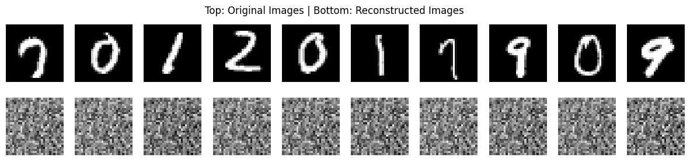

Autoencoders#
Autoencoders are neural network architectures used to learn efficient, compressed representations of data — called encodings or latent representations — in an unsupervised manner.
An autoencoder learns: $\( x ; \xrightarrow{\text{Encoder}} ; z ; \xrightarrow{\text{Decoder}} ; \hat{x} \)$
where:
\(x\): original input
\(z\): encoded latent representation (compressed form)
\(\hat{x}\): reconstructed output (should be as close to \(x\) as possible)
Architecture#
It consists of three parts:

(a) Encoder#
Maps the input \(x\) to a latent vector \(z\).
Gradually reduces dimensionality.
Learns the most relevant features.
(b) Latent Space (Bottleneck)#
The compressed representation of the input.
Acts as an information bottleneck: only the most meaningful features pass through.
The dimension of \(z\) is much smaller than \(x\).
(c) Decoder#
Reconstructs the input from \(z\).
Tries to reverse the encoding process.
The output \(\hat{x}\) should be as close as possible to the input \(x\).
3. Objective Function#
The goal is to minimize reconstruction loss:
or, for images, $\( L = \frac{1}{N} \sum_i (x_i - \hat{x}_i)^2 \)$
If inputs are probabilistic (e.g., grayscale pixels between 0 and 1), cross-entropy loss can also be used.
4. Intuition#
Autoencoders don’t memorize data — they learn compact patterns that can explain it efficiently.
Example:
Input: a 28×28 grayscale image (784 pixels)
Encoder compresses to 32 numbers (latent vector)
Decoder reconstructs the image from those 32 numbers If the reconstruction is close to the original, the model has learned meaningful features.
Variants of Autoencoders#
Undercomplete Autoencoder#
Bottleneck dimension < input dimension.
Forces network to learn compressed features.
👉 Common for dimensionality reduction.
Denoising Autoencoder#
Input is corrupted (noise added).
Network must reconstruct the clean version.
👉 Forces network to learn robust representations.
Sparse Autoencoder#
Adds a sparsity constraint on hidden neurons.
Only a few neurons activate for any given input.
👉 Encourages features that are disentangled and interpretable.
Contractive Autoencoder#
Adds a penalty on gradients of hidden activations w.r.t. inputs.
Makes the representation resistant to small perturbations.
👉 Increases robustness to noise.
Variational Autoencoder (VAE)#
A probabilistic version of autoencoder.
Learns a distribution over the latent space, not just fixed points.
Encoder outputs mean (μ) and variance (σ) vectors: $\( z = \mu + \sigma \odot \epsilon, \quad \epsilon \sim \mathcal{N}(0, I) \)$
Loss = reconstruction loss + KL divergence (regularization).
👉 Used in generative modeling (e.g., image synthesis).
Convolutional Autoencoder (CAE)#
Uses convolutional layers for encoding and decoding.
Works better for image data by capturing spatial patterns.
👉 Used for denoising and dimensionality reduction in vision.
Sequence Autoencoder#
Uses RNNs (LSTM/GRU) for sequential data (text, time series).
Encoder compresses sequence → context vector
Decoder reconstructs sequence from context
👉 Used in NLP tasks.
Applications#
Domain |
Application |
|---|---|
📷 Computer Vision |
Image denoising, compression, anomaly detection |
💬 NLP |
Sentence embedding, language model pretraining |
📊 Data Compression |
Dimensionality reduction (like PCA) |
⚙️ Anomaly Detection |
Learn “normal” patterns, detect deviations |
🧬 Bioinformatics |
Gene expression encoding |
🧮 Generative Modeling |
Image and music generation (VAE, GAN hybrids) |
✅ Unsupervised — no labels needed ✅ Learns non-linear features ✅ Dimensionality reduction better than PCA ✅ Useful for data compression, pretraining, and anomaly detection
Limitations#
❌ May just copy input if not properly regularized ❌ Latent space not always interpretable ❌ Not generative unless probabilistic (like VAE) ❌ Sensitive to overfitting and poor initialization
Example in PyTorch (Simplified)#
import torch
from torch import nn
class Autoencoder(nn.Module):
def __init__(self):
super().__init__()
self.encoder = nn.Sequential(
nn.Linear(784, 256),
nn.ReLU(),
nn.Linear(256, 64),
nn.ReLU()
)
self.decoder = nn.Sequential(
nn.Linear(64, 256),
nn.ReLU(),
nn.Linear(256, 784),
nn.Sigmoid()
)
def forward(self, x):
z = self.encoder(x)
out = self.decoder(z)
return out
model = Autoencoder()
import torch
from torch import nn
from torchvision import datasets, transforms
from torch.utils.data import DataLoader
import matplotlib.pyplot as plt
transform = transforms.Compose([transforms.ToTensor(), transforms.Lambda(lambda x: x.view(-1))])
test_dataset = datasets.MNIST(root='./data', train=False, transform=transform, download=True)
test_loader = DataLoader(test_dataset, batch_size=10, shuffle=True)
100%|██████████| 9.91M/9.91M [00:05<00:00, 1.89MB/s]
100%|██████████| 28.9k/28.9k [00:00<00:00, 108kB/s]
100%|██████████| 1.65M/1.65M [00:03<00:00, 517kB/s]
100%|██████████| 4.54k/4.54k [00:00<00:00, 3.02MB/s]
# Take a batch of test images
images, _ = next(iter(test_loader))
outputs = model(images)
# Plot original vs reconstructed images
fig, axes = plt.subplots(2, 10, figsize=(15, 3))
for i in range(10):
axes[0, i].imshow(images[i].view(28, 28).detach().numpy(), cmap='gray')
axes[0, i].axis('off')
axes[1, i].imshow(outputs[i].view(28, 28).detach().numpy(), cmap='gray')
axes[1, i].axis('off')
plt.suptitle("Top: Original Images | Bottom: Reconstructed Images")
plt.show()

Training uses MSE loss and Adam optimizer to minimize:
Visualization (Conceptual)#
┌────────────────────────────────────────┐
│ AUTOENCODER │
└────────────────────────────────────────┘
Input → [Encoder ↓] → [Latent Space] → [Decoder ↑] → Output
↓ Compress | Expand ↑
Representation | Reconstruction
In Summary
Component |
Role |
|---|---|
Encoder |
Learns compressed representation |
Latent Vector (z) |
Holds the essential features |
Decoder |
Reconstructs input from z |
Loss Function |
Ensures reconstructed output ≈ input |
Goal |
Learn efficient, meaningful representations of data |
Autoencoders = Neural compression + reconstruction. They learn the essence of your data by forcing the model to rebuild it from fewer dimensions.